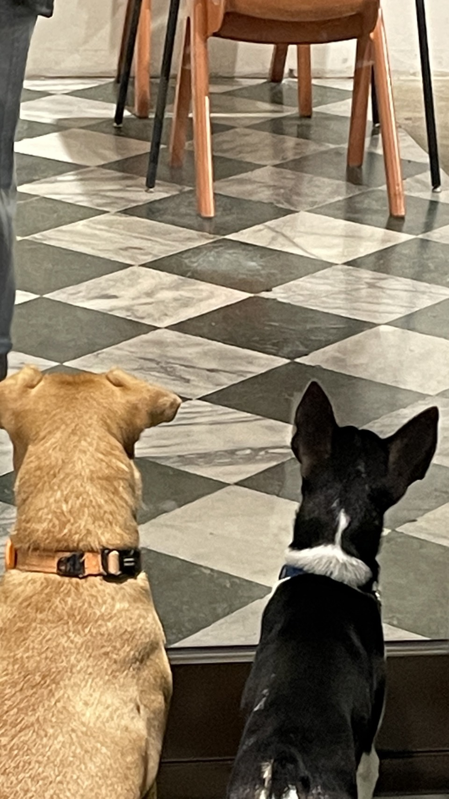
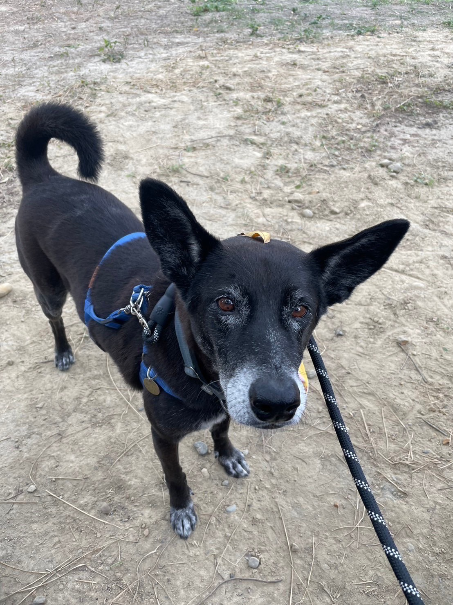
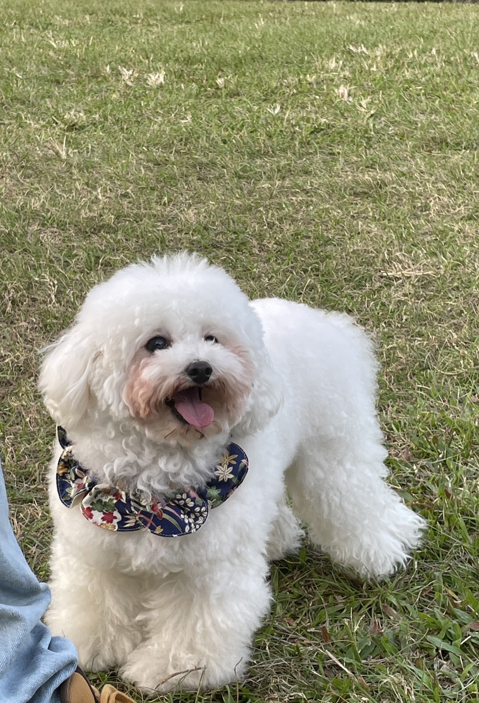
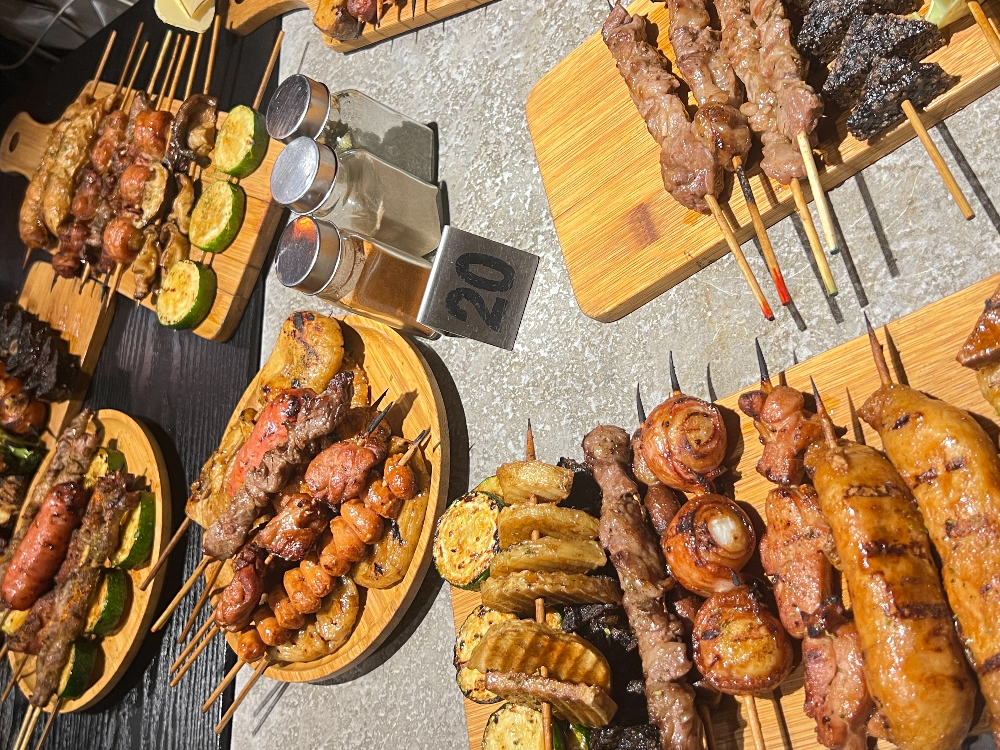
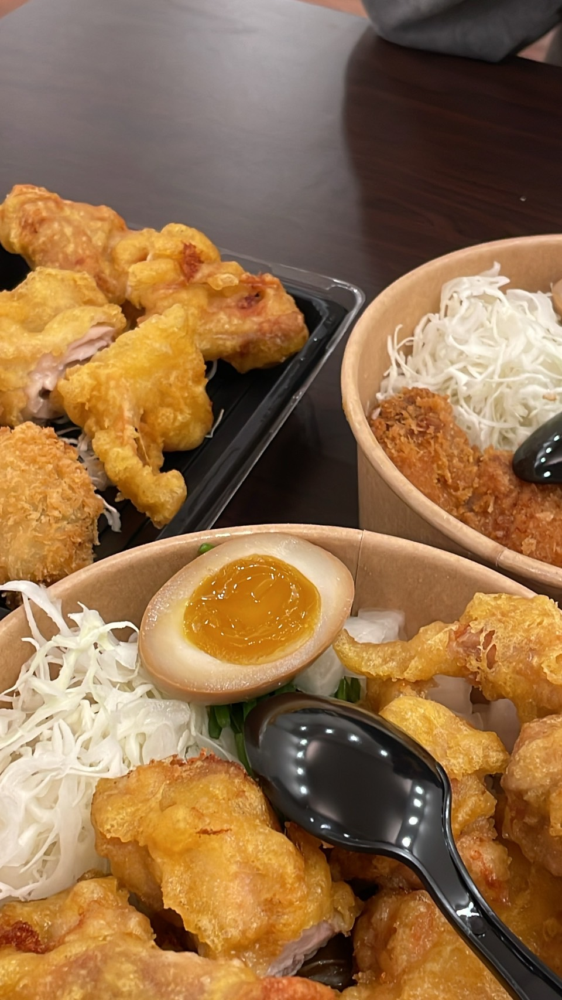
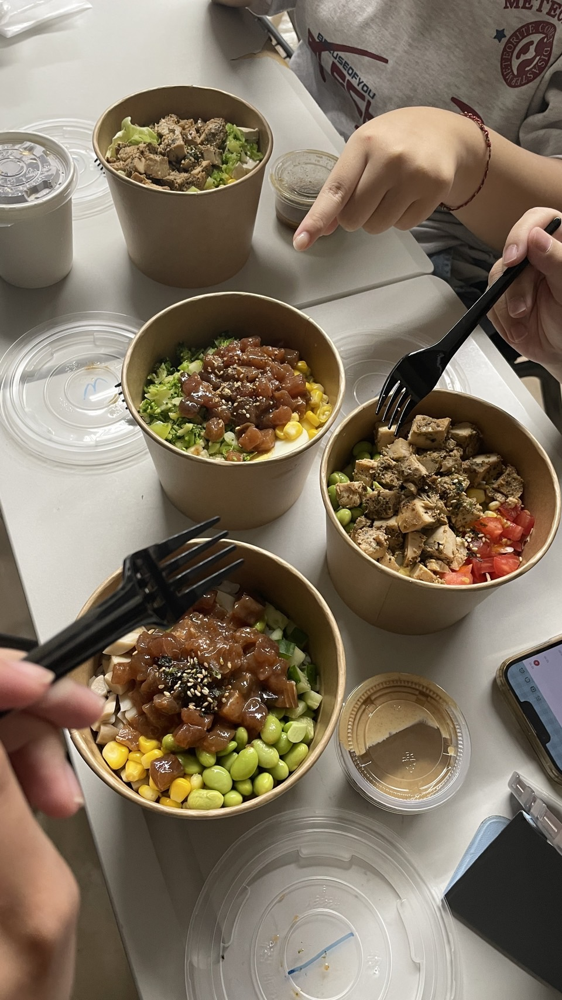
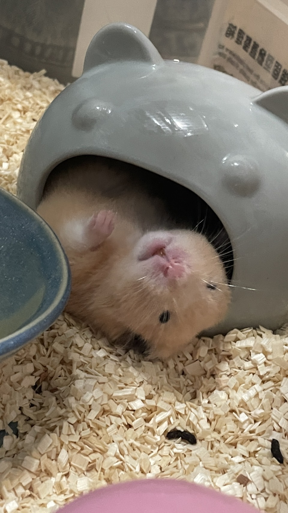
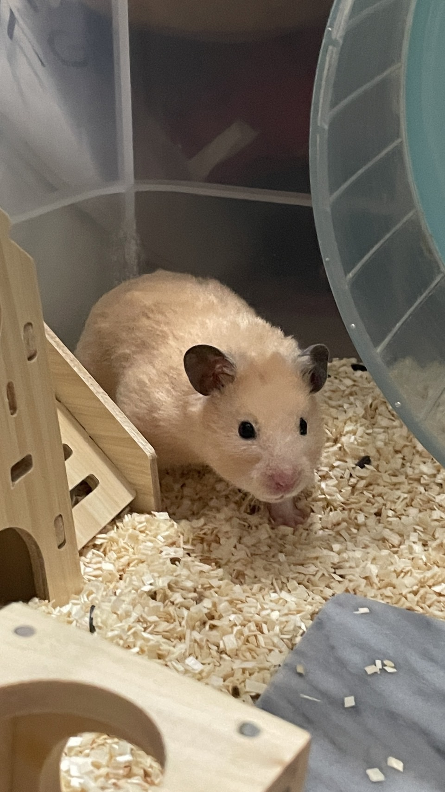

Welcome To My Blog！
這是一個分享日常生活的簡易部落格，裡面會有食物跟狗狗們！

這是去浪浪別哭餐廳的時候拍的！這兩隻狗狗同步正在看著另一扇門內的貓咪們(超級可愛><)，那裡都是在等家的貓貓狗狗，如果有想領養動物的話可以到那邊去看看，所有的狗狗都很親人、都被照顧得很好！而且食物也都很好吃，非常推薦大家去看看~

這是輔大的校狗之一(但忘記牠的名字了。)，是在愛狗社的群組看到的照片，覺得很可愛就存下來的！如果喜歡狗狗又想遛狗的話，可以在特定的時間去狗舍看看~我之前就有遛過一次！

這是在華山的草地上遇到的可愛小狗，牠小小一隻又蓬蓬的超像棉花糖！超級黏主人，牠的主人還說牠有去比賽，而且還有自己的IG帳號，是一隻網紅小狗！

這是我們去吃品都的時候拍的！雖然不能先訂位只能現場排(而且每次都很多人^^)，但真的非常推薦大家去吃一次，因為真的超級好吃...尤其推薦櫛瓜跟培根包麻糬！

這是在輔大514巷的某間咖哩飯店(忘記店名叫什麼了但應該有人知道)，那裡的東西還不錯吃而且份量蠻多的還可以續咖哩跟湯跟飲料！然後炸牡蠣超級好吃。

這也是在輔大514巷的一間新開的波奇店，我點的是醃鮪魚，其實挺不錯吃的而且份量確實也夠多！

這是我們家的鼠寶寶奶油，大概是六個月大的小男生，牠平常最喜歡做的事就是吃飯跟睡覺，然後偶爾跑一下滾輪後，繼續吃飯或睡覺(而且超級挑食^^受夠)。

這是奶油寶寶聞到食物味道的時候，準備跑過來吃東西的樣子！牠每次都要匍匐前進感覺像在試探什麼一樣(但很可愛)，而且牠是肥寶寶。